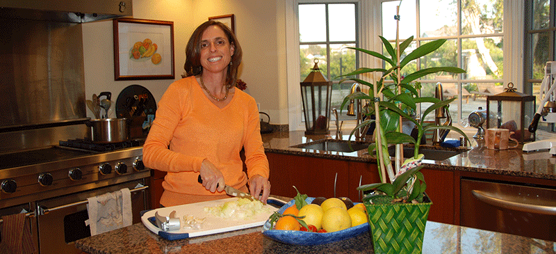

Most of the food prepared in the Elster family kitchen is gluten free, all of it is vegetarian. I became a vegetarian in 1994, and was diagnosed with Celiac disease in 2006. Discovering great gluten free vegetarian recipes has become one of my passions. This site is basically my cookbook - it contains the recipes I make most often. I hope you enjoy reading through them and trying some of the dishes.
